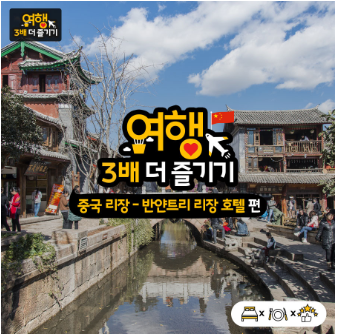
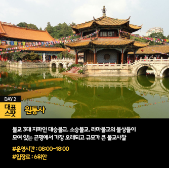

안녕하세요!
교통, 맛집, 쇼핑, 편의시설(숙박) 등
여행의 필수 요소와 함께
다양하고 폭넓은
여행 정보를 소개하는 시간입니다!
오늘은 오랜 전통과 자연경관을 함께
느낄 수 있는 떠오르는 여행지!
중국 리장으로 가보실까요?
중국 리장은 동양의 베니스라 불리며
전 세계적으로 주목받고 있는 여행지랍니다.
세계문화유산과 소수민족의 전통이
공존하는 신비로운 곳입니다.
여행할 때 가장 중요한 부분 중 하나가
바로 숙소인데요.
오늘은 중국 리장의 5성급 호텔!
반얀트리 리장 호텔에 대해 알아보려고 해요.
전통과 현대가 만난 럭셔리한 곳~
지금부터 함께 살펴볼까요?

중국 리장 - 반얀트리 리장 호텔
여행 3배 더 즐기기
- 종합 편 -
동양의 베니스 리장에 위치한 5성급 호텔
"중국 리장 - 반얀트리 리장 호텔"
1. 객실
무려 124개의 객실이 설치가 되어 있고
내부에는 이용객의 편의를 돕기 위해
냉장고 및 미니바 등
다양한 옵션들을 갖추고 있습니다.
특히 룸에서 옥룡설산이 보이는
훌륭한 전망을 가지고 있습니다.
무료 인터넷, 위성 프로그램도 즐길 수 있으며
쾌적한 욕실과 어매니티 구성도
만족도를 높여준답니다.
호텔과 가까운 거리에 유네스코로 지정된
명소인 리장고성이 있어
도보로도 다녀올 수 있답니다.
[두 번째 즐기기! 레스토랑 편]
중국 리장 - 반얀트리 리장 호텔
1. Ming Yue Restaurant
호텔하면 뷔페를 빼놓을 수 없죠?
중국 향토 요리를 즐길 수 있는
레스토랑으로 실내뿐만 아니라
야외에서도 다양한 메뉴의
요리를 즐길 수 있는데요.
아침 6시 30분부터 오후 11시까지
즐길 수 있으니 참고해주세요!
 2. Bai Yun Restaurant
동양적인 외관과 어울리는 인테리어가
시선을 끄는 레스토랑인데요.
중국 전통의 실내장식을 모토로
내부를 구성한 곳입니다.
야외무대의 음악 연주를 감상하며
옛 전통의 품격 있는 분위기 속에서
식사를 즐길 수 있어요!
별도의 프라이빗룸이 있어
비즈니스 업무도 이곳에서 볼 수 있답니다.
중국 전통의 광동요리가 제공되는
중국 연회 양식의 다이닝 서비스도 제공되니까
참고하셔서 이용하시기 바랄게요:)
[세 번째 즐기기! 편의시설 편]
중국 리장 - 반얀트리 리장 호텔
1. 헬스클럽
반얀트리 리장 호텔에 위치한 헬스클럽은
천장부터 벽까지 온통 통유리로 되어 있어서
싱그러운 잔디와 나무들을 바라보
며 운동을 하기 때문에
힐링하는 기분까지 든답니다.
여행 가서도 운동은 하루도 빼먹지 마세요~!
2. 스파
반얀트리 호텔에서 스파는
빼놓을 수 없는 부대시설 중 하나인데요!
한국에서도 반얀트리 호텔보다
스파를 찾는 손님이 많을 정도로
유명하답니다. 바디스크럽, 오일 마사지,
페이스 마사지 등 리장 현지의
천연 재료를 이용한
아로마테라피도 제공하기 때문에
여행을 와서 스파를 받는 스페셜한
기분은 느낄 수 있으실 거예요.
몸이 찌뿌둥하거나 여독이 안 풀렸을 때
스파에 꼭 들러 케어를 받아보세요!
3. 미용실
호텔 내부에 미용실이 입점되어 있습니다.
헤어 관리, 네일케어 등 뷰티 서비스를
원하는 분들은 미용실에 방문해서
서비스를 받아보세요~
호텔 내부에 위치해있어 더욱 편리하답니다.
헤어 컷뿐만 아니라 샴푸, 두피 마사지도
실시한다고 하니 관심 있는 분들은
참고하셨다가 이용해보세요:)
오늘은 중국 전통과 자연경관이 공존하는
리장의 반얀트리 호텔에 대해
함께 알아봤습니다.
각 룸에서 천혜의 자연인 옥룡설산을
감상할 수 있다는 점이
가장 인상 깊었습니다.
공기 좋은 곳에서 푸른 자연과 함께
럭셔리한 호텔 스파 받아보고 싶네요!
다음 주도 기대 많이 해주세요!
여러분들의 여행이 더욱 즐겁고
가벼워지길 바라며
풍성하고 알찬 여행 정보 가지고
다시 찾아오겠습니다:D
2. Bai Yun Restaurant
동양적인 외관과 어울리는 인테리어가
시선을 끄는 레스토랑인데요.
중국 전통의 실내장식을 모토로
내부를 구성한 곳입니다.
야외무대의 음악 연주를 감상하며
옛 전통의 품격 있는 분위기 속에서
식사를 즐길 수 있어요!
별도의 프라이빗룸이 있어
비즈니스 업무도 이곳에서 볼 수 있답니다.
중국 전통의 광동요리가 제공되는
중국 연회 양식의 다이닝 서비스도 제공되니까
참고하셔서 이용하시기 바랄게요:)
[세 번째 즐기기! 편의시설 편]
중국 리장 - 반얀트리 리장 호텔
1. 헬스클럽
반얀트리 리장 호텔에 위치한 헬스클럽은
천장부터 벽까지 온통 통유리로 되어 있어서
싱그러운 잔디와 나무들을 바라보
며 운동을 하기 때문에
힐링하는 기분까지 든답니다.
여행 가서도 운동은 하루도 빼먹지 마세요~!
2. 스파
반얀트리 호텔에서 스파는
빼놓을 수 없는 부대시설 중 하나인데요!
한국에서도 반얀트리 호텔보다
스파를 찾는 손님이 많을 정도로
유명하답니다. 바디스크럽, 오일 마사지,
페이스 마사지 등 리장 현지의
천연 재료를 이용한
아로마테라피도 제공하기 때문에
여행을 와서 스파를 받는 스페셜한
기분은 느낄 수 있으실 거예요.
몸이 찌뿌둥하거나 여독이 안 풀렸을 때
스파에 꼭 들러 케어를 받아보세요!
3. 미용실
호텔 내부에 미용실이 입점되어 있습니다.
헤어 관리, 네일케어 등 뷰티 서비스를
원하는 분들은 미용실에 방문해서
서비스를 받아보세요~
호텔 내부에 위치해있어 더욱 편리하답니다.
헤어 컷뿐만 아니라 샴푸, 두피 마사지도
실시한다고 하니 관심 있는 분들은
참고하셨다가 이용해보세요:)
오늘은 중국 전통과 자연경관이 공존하는
리장의 반얀트리 호텔에 대해
함께 알아봤습니다.
각 룸에서 천혜의 자연인 옥룡설산을
감상할 수 있다는 점이
가장 인상 깊었습니다.
공기 좋은 곳에서 푸른 자연과 함께
럭셔리한 호텔 스파 받아보고 싶네요!
다음 주도 기대 많이 해주세요!
여러분들의 여행이 더욱 즐겁고
가벼워지길 바라며
풍성하고 알찬 여행 정보 가지고
다시 찾아오겠습니다:D
4계절 내내 봄의 날씨라는
꽃의 도시, 곤명 여행은 어때?!✈
@석림은_보고_또_봐도_멋진뒈?
노랑풍선
중국 곤명 4박 5일 패키지 따라잡기
Start!
상품번호 : CSP5000
[봄의도시] 곤명/대소석림/구향동굴 4박 5일
399,000원~
중국 곤명 4박 5일
떠나기 전에 확인해요!
포함사항
-왕복 항공료 및 각종 TAX
-호텔(2인 1실)
-기본 관광 입장료
-일정표상의 식사
-전용 차량
-여행자 보험
불포함 사항
-중국 단체비자 발급비
-가이드 / 기사경비 ($50)
-선택 관광 비용 / 개인 경비 / 매너팁
환전
늦은 시간에는 공항의 환전소가 열지 않으니
미리 필요한 만큼의 중국 위안화를
준비해주세요!
옵션사항
-발마사지 / 전신 마사지 20$,30$ / 약 1시간
-토림 120$,150$ / 약 8시간
-운남민족촌가무쇼 30$ / 약 1시간
-운남영상가무쇼 30$ / 약 100분
중국 곤명 4박 5일
패키지 일정
1일차 - 인천 출발 ▶ 곤명 도착
2일차 - 원통사 관광 ▶ 취호공원 관광 ▶
육군강무당 관광 ▶ 서산용문 관광
▶ 곤명호 관광
3일차 - 석림 이동 ▶ 대석림,소석림 관광
▶ 구향이동 ▶ 구향동굴 관광 ▶ 곤명 이동
4일차 - 금전 관광 ▶ 운남민족촉 관광
▶ 민족박물관 관광
5일차 - 곤명 출발 ▶ 인천 도착

DAY2 대표스팟
원통사
불교 3대 지파인 대승불교, 소승불교,
라마불교의 불상들이 모여 있는
곤명에서 가장 오래되고
규모가 큰 불교사찰
#운영시간 : 08:00~18:00
#입장료 : 6위안
DAY3 대표스팟
대석림, 소석림
자연이 오랜 세월 빚어낸 카르스트 지형의
조형미를 감상할 수 있는
중국 4대 자연경관 중 한 곳
#운영시간 : 07:00~18:00
#입장료 : 175위안
DAY3 대표스팟
구향동굴
영화 "신화"에 나온 관광지로 계곡과 폭포,
기암괴석으로 이루어진 중국 3대 동굴 중 하나
#운영시간 : 09:00~18:00
#입장료 : 90위안
DAY4 대표스팟
금전
태화궁 일부분에 속하는 곳으로
명나라 말기의 장수인
오상계와 진홍원의 숨결을 느낄 수 있는
중국 4대 동전 중 하나
#운영시간 : 07:00~19:00
#입장료 : 30위안
노랑풍선 담당자가 먼저 다녀온
"안녕! 베이징" 북경 4일
기간 : 3박 4일
지역 : 중국 베이징
중국 베이징
▷1일차
주요일정 : 천안문광장,자금성,왕부정거리
한국 출발 08:35 - OZ3355
장소는 일정표상에 나와 있는
김포국제공항 4층 단체 여객대합실
미팅 시간은 07:00인데 그것보다 더 이른
시간인 06:00쯤 공항에 도착해서
공항을 둘러보고 미팅 카운터도 갔어요.
06:30쯤 손님들이 진주에서 올라오심에도
불구하고 엄청 빨리들 오셨어요.
김포공항 4층 단체 여객대합실에는
인천공항과는 다르게 조금 텅 비어있는
느낌이었어요. 출국하러 들어가는 길
이날 공항이 굉장히 붐비었어요.
탑승수속은 15분 전에 했답니다.
북경국제공항 도착 후
비자 수속을 받고난 뒤
수하물을 찾은 손님들을 인솔하고
노랑풍선 피켓을 든 가이드를 미팅했어요.
미팅 후 현지식을 먹고
중국의 대표 관광지인 천안문 광장을 지나
사진을 촬영하면 가장 잘 나온다는
관광지인 자금성 관광을 했어요.
왕부정거리에 들러서 1시간 동안
거리 관광하는 시간을 가졌어요.
특이한 음식이 많았고 입구에 들어서자 마자
취두부 냄새와 마라 냄새가 코를 찔렀어요.
각종 기념품도 살 수 있고 북경의 명동이라
불리는 명성에 걸맞게
사람이 굉장히 많았어요!
버스로 복귀해서 석식으로 오리구이를 먹고
호텔 투숙 및 휴식을 했어요.
중국 베이징
▷2일차
주요일정 : 만리장성,명13릉,이화원,
올림픽경기장(차창),전신마사지
호텔 알람이 울려서 05:40분쯤
일찍 기상하고 06:00~07:00
호텔 식당 오픈 시간이라
급하게 준비하고 나가서
조식을 먹고 버스에 올라탔어요.
조식을 먹고 버스로 1시간 30분 정도
이동 후 만리장성에 도착했어요.
만리장성 거용관 도보 코스였기 때문에
케이블카를 타지 않았고 걸어서 올라갔어요.
입구의 모습, 중간 올라가 다 모습,
정상의 모습인데요!
이 날 계단의 폭이 넓어서 힘들었지만
손님들이 70대 분들이셔서
오기가 생겨서 저도 정상까지
따라갔답니다ㅎㅎ
관광을 마치고 난 뒤 이화원으로 갔어요.
뱃놀이를 기대하고 갔지만
이날 뱃놀이는 진행하지 않았고
지상 공원만 걷는 일정으로 진행됐어요.
풍경만큼은 끝내주게 예뻤어요:)
그리고 올림픽 경기장은
차창 관광이기 때문에
너무 순식간에 지나서 촬영은 따로 안 했고,
마사지 지샵 내에 촬영도 불가능해
마사지하는 모습도 담지 못했어요.
마사지는 전신 마사지로 약 50분간
진행했는데요. 마사지 진행 후
석식으로는 고기뷔페를 먹고
호텔로 복귀했어요.
돌아오니 하루가 다 지나가 있었고,
이때 시간은 10시였어요..
중국 베이징
▷3일차
주요일정 : 호텔인스펙션,금면왕조쇼(C/D석) 관람
아침에 호텔인스펙션을 해준다고 해서
기존 일정인 798 예술거리,
스차하이 옛 거리, 아쿠아리움은
진행하지 못하였고,
호텔인스펙션 진행 후
17:30 공연인 금명 왕조 쇼만
진행하기로 했어요.
호텔인 스펙 선부터 이후 호텔,
춘휘원호텔, 마크로 링크 레전드호텔
세 곳을 둘러보았는데
각양각색 특징들이 있었지만 그중에서
마크로 링크 레전드 호텔은
정말 잊을 수가 없다.. 너무 좋았어요..♡
첫 번째로 실속 상품에 들어가는
이푸 호텔(준 특급, 준 4성급 호텔)로 갔는데
외관부터 깔끔하고 로비도 심플하고
방안도 깨끗하고 식당도 깨끗했어요.
두 번째로 품격 상품에 들어가는
춘휘원 호텔(특급. 준 5성급 호텔)로
갔는데 외관부터 로고가 세련되고
로비도 특급답게 더 구조가 세련되고
방안이 깨끗함은 물론 베란다 쪽에
개인 스파를 할 수 있는 온천인
자쿠지가 배치되어 있었고
건물을 이동해서 따로 온천으로 들어가니
온천시설과, 풀장, 산책할 수 있는
호숫가 가 있었답니다.
세 번째로 품격 상품에 들어가는
마크로 링크 레전드 호텔
(특급, 준 5성급 호텔)로 갔을 때는
사진상에도 보이다시피 외관부터가
궁전에 온듯한 느낌이 들었다.
춘휘원호텔의 로비랑 비슷해서
로비는 따로 담지 않았고
인상 깊은 몇 가지만
사진에 첨부를 해보았어요.
화장실이 세면대부터 넓고
너무 깔끔했고 부대시설로는
게임방이 있었는데
입체영상 나오는 3D 게임기도 있고
애들 놀이방도 있었다 신기했어요.
그리고 호텔의 방 안에는
유일하게 위에 두 호텔에 없던
냉장고가 있어서 신기해서 촬영했어요ㅎㅎ
마크로 링크 호텔은 수영장과
온천이 부대시설로 있는데
사진으로도 수영장이 세련된 점이
돋보이고 온천 또한 시설이 깨끗하고
잘 구비되어있는 모습이 보여요:)
호텔 인스 팩션을 모두 마치고
다시 패키지 손님들과 합류를 해서
금명 왕조쇼를 관람했어요.
2년 전에 중국 서안에서 장한 가무 쇼를
보고 왔는데 금명 왕조쇼에 비하면
정말 게임이 안 될 정도로
금명 왕조는 퀄리티와
장면 하나하나가 정말 예술이었고
마지막 사진인 폭포같이 쏟아지는
저 물쇼는 정말 잊지 못할
아름다움을 내게 선사해주었어요!
공연이 마친 뒤에는 샤브샤브를
석식으로 먹고 호텔로 복귀답니다:)
중국 베이징
▷4일차
주요일정 : 복귀준비
북경출발 2019년 04월 13일(수)
12:10 - OZ3365
아침에 일어나서 시원한 반
아쉬움만을 안고 리무진버스에
올라타 공항으로 이동했어요.
수하물을 붙이고 가이드와 작별 인사를 하고
인솔자로써 끝까지 어르신들을 모셨어요.
이날 공항에 일찍 도착했지만
20명이 넘는 인원이
단체비자를 수속하느라
30분 정도 시간이 걸렸어요.
그런데도 불만을 가지는 어르신들은
단 한 분도 없었어요. 감사했습니다..!
김포국제공항에 내려서 손님들 짐을 찾는
것을 끝까지 함께 함으로써
인솔자의 업무가 모두 끝이 났고,
어르신들 한 분 한 분 인사를 드리고
작별을 했어요. 즐거운 여행이었어요:D
사무실에서 전화로만 예약을 받고
여행에 필요한 준비사항을
모두 준비해주는 식으로만 진행을 하다가
직접 현지에 가서 손님들 사이에 껴서
여행을 다녀오니 정말 행사 하나하나
중요하게 생각하고
식사, 일정, 호텔, 가이드, 차량,
대체 일정 등 무엇 하나 빠져서는
안 되는 요소라고 느꼈어요.
여행을 다녀오기 전
나는 보내면 끝인 줄 알았지만
보내고 나서가 더 문제인걸 깨달았는데요.
북경이라는 지역은 담당인
나도 가보고 싶었지만
대부분의 사람들에게 물어보면 가봤다고
하기도 하고 살기 좋은 지역이라고 해요.
천안문 광장, 만리장성,
자금성을 보기 위해서 가는 곳이
바로 북경인데 나이가 꽤 드신 분들과
진행을 하였지만 답답하지 않았고
가이드를 잘 만나서
유쾌함과 즐거운 시간이
되었던 거 같아요:)
출발할 때 걱정을 많이 했지만
인솔자로서의 첫 경험을 하게 해주었던
3박 4일이었답니다.
호텔에서부터 식사까지
변동되는 일정에 대한 대처 또한
가이드가 유유히 자연스럽게
정말 잘 해내주었고
3박 4일 동안 26명의
할아버지 손님들에게도 웃음을 잃지 않고
손님들부터 챙기고 물질적인
욕심이 없는 것을 보여주는 생각하는
가이드분의 모습이 정말 진심으로
멋있었고 존경스러웠어요!
이번에 여행을 같이 갔었던
손님들이 용경협 일정 변경 건에 대해서
크게 불만 가지는 분들도 없고
오히려 일정을 한 개를 빼고
두 개를 넣어주었다고 해서
더 즐거워한 대표자 분과
버스에서 마이크를 잡고
연설하던 총무님이 있으셔서
오히려 가이드를 당황스럽게 만들던
기억이 떠올라요.
팀을 잘 만나서 즐거운 여행이 되었던 것 같고
끝으로 3박 4일 동안 손님들과
문제없이 잘 진행을 하게 해준
베테랑 가이드인
김선옥 가이드님께 감사드립니다!♥
#여행을가볍게노랑풍선
#여행을가볍게 #노랑풍선
#노랑풍선베이징패키지 #베이징패키지
#베이징3박4일 #베이징여행
#베이징호텔 #베이징여행추천 #베이징 #북경
안녕하세요!
여러분들의 여행이 더욱 재미있게
여행에서 빠질 수 없는 교통, 맛집, 쇼핑,
편의시설(숙박)을 기본으로 공항,
테마파크, 여행지, 호텔, 쇼핑센터 등
다양하고 알찬 정보를
매 주 전해드리고자 합니다!
이 콘텐츠를 통해 여러분들의 여행이
더욱 재미있고 한층 더 업그레이드 되길
바라면서 힘차게 시작해볼까요?
오늘 함께 여행할 곳은
바로 러시아 블라디보스톡입니다.
가장 가까운 유럽으로 불릴 만큼
이국적인 매력을 자랑하는 여행지인데요~
지난해부터 유명 TV 프로그램에
소개되면서 인기가 점점 급상승하고 있는
곳이랍니다. 비행기로 2시간 30분이면
도착하는 비교적 가까운 거리에
독립운동의 첫걸음을 시작한
역사적인 곳이라 그런지
우리나라 관광객들의 방문이
점점 늘고 있다고 해요.
시베리아 횡단열차의 시작점으로도
유명해서 전 세계적으로도 주목받는 곳입니다!
블라디보스톡에 다채로운 매력의
관광 명소가 많기로 유명한데요.
오늘 집중적으로 다뤄볼 곳은 바로~
우리나라 대학로, 가로수길과 같은 느낌의
거리인 아르바트거리에요.
맛집과 숙소가 즐비해서 이곳에서 머무르는
관광객들이 꽤 많다고 합니다.
차량 통행이 금지되어 있어 산책하며
여유롭게 둘러보기 좋은 곳이에요!
그럼 본격적으로
아르바트 거리를 즐겨볼까요?
러시아 블라디보스톡 아르바트 거리
여행 3배 더 즐기기
- 종합 편 -
우리나라의 가로수길과 같은
느낌의 매력적인 거리
"러시아 블라디보스톡 아르바트 거리"
[첫 번째 즐기기! 교통 편]
러시아 블라디보스톡 아르바트 거리
1. 공항버스 (107번)
블라디보스톡 국제공항에서
아르바트 거리로 이동할 때 타는
교통수단을 소개할게요~
공항에서 나와 길 건너편 왼쪽을 보면
버스 정류장이 있습니다.
공항버스 107번을 타면 아르바트거리로
한 번에 이동이 가능하답니다.
107번 버스는 우리가 생각하는 큰 버스가
아니고 밴과 비슷한 차량입니다.
30분 간격으로 운행되는 편이며
교통상황에 따라 달라질 수 있다고 하니
참고해주세요!
이 공항버스는 지난해 짠내투어에서도
등장했는데요~ 가장 저렴하고 쉽게
이용이 가능한 버스이니, 참고바랄게요:)
107번 버스 요금은 1인당 220루블,
캐리어 1개당 110루블입니다!
#운영시간 : 08:10~22:00
2. 택시
앞서 소개한 항버스는 배차시간이 30분,
길면 1시간까지 소요되어
빠른 시간 내 편안하게
이동하고 싶은 분들은 택시를 이용해보세요.
택시 어플이 있어 미리 다운받으면
이용하는데 정말 편리한데요!
Maxim, Yandex, Gett 등
콜택시 어플도 다양하게 구성되어 있답니다.
비용은 도착 위치에 따라 조금씩 다르지만
1천 루블 내외 지불한다고
생각하시면 되세요~
공항에서 아르바트 거리 기준으로
약 50분 정도 소요된답니다.
막심보다는 얀덱스 택시 어플을 많이
이용한다고 하니 참고해주세요!
[두 번째 즐기기! 맛집 편]
러시아 블라디보스톡 아르바트 거리
1. 로즈키 플로스키(러시아 로컬요리)
블라디보스톡 여행을 가면
반드시 먹어야 할 음식 중 하나가
바로 러시아식 만두인 펠메니입니다~
펠메니를 판매하는 곳 중
아르바트거리에서 맛있다고 소문난 곳이
바로 이 로즈키 플로스키라는
레스토랑인데요!
만두 좋아하는 만두덕후님들은
모두 모두 방문해보세요:)
내부는 러시아 전통의 요리도구들로 세팅해
로컬 분위기가 물씬 풍기는 곳이랍니다.
만두를 빚는 도구로 인테리어를
한 센스가 돋보인답니다.
브런치도 판매하고 일반 메뉴도
만두와 함께 주문할 수 있는 곳이에요.
맛있는 러시아식 만두를 제대로
즐기고픈 분들은 꼭
로즈키 플로스키 레스토랑에 꼭 들러보세요!
2. 수프라
블라디보스톡 아르바트 거리의 맛집으로
유명한 곳으로 손꼽히는 다음 타자는
바로 수프라입니다.
해양거리에 위치한
조지아 전통요리 레스토랑으로
고급스러운 인테리어가 돋보이는
럭셔리한 곳이랍니다.
메뉴는 만두, 볶음 고기류, 피자, 샐러드 등
다양하게 마련되어 있어
골고루 즐길 수 있어요~
아울러 맥주와 와인도 종류가 많아
요리와 함께 즐겨보시면 좋을 것 같습니다.
이곳의 대표 메뉴로 조지아식 치즈빵으로
유명한 하차푸리라는 음식인데요.
빵 가운데 치즈, 계란, 버터를 섞은 뒤
겉에 있는 빵을 뜯어
가운데 소스에 찍어 먹는 요리랍니다.
따뜻할 때 먹는게 맛있다고 하니까
꼭 기억하셨다가 식기 전에 드세요!
하차푸리 외에도 이곳에서 즐길 수 있는
러시아 전통요리로 러시아식
그릴 꼬치요리인 샤슬릭이 있습니다.
돼지고기 소고기 양고기 등 다양한 종류의
고기를 꼬치에 끼워 구운 그릴요리인데요.
맛있는 양념을 골고루 묻혀 숙성시킨 뒤
숯불에 천천히 익혀내는 요리입니다.
우리나라의 닭꼬치와 비슷하죠?
고유의 러시아 요리를 즐기고픈 분들은
이곳에 들러 꼭 다양한 메뉴 주문해서
드셔보세요!:D
> 블라디보스톡 아르바트 거리
관련 상품 바로 가기
[세 번째 즐기기! 숙소 편]
러시아 블라디보스톡 아르바트 거리
1. 아지무트 호텔 올림픽 모스크바
아지무트호텔은 주변에 유명 박물관,
미술관, 광장과 가까운 위치에 있어
관광지와의 접근성이 좋은 호텔입니다.
에어컨이 설치된 492개 객실과
다양한 부대시설을 갖추고 있는데요.
편의시설로는 실내수영장, 스파 욕조,
사우나를 비롯해 다양한 레크레이션
시설을 즐길 수 있어요~
3개의 레스토랑 및 커피숍 카페도 있어
맛있는 요리와 여유를 함께 즐기고픈
분들은 이곳을 방문해보세요!
조식은 아침 7시부터 오전 11시까지
유료로 이용할 수 있답니다.
해양공원과 가까이 있으니 가볍게
산책하러 들러보는 것 추천드려요!:)
>블라디보스톡 아지무트 호텔
관련 상품 바로 가기
2. 베르사유 호텔
아르바트거리에서 엎어지면 코 닿는 거리에
위치한 베르사유 호텔은
블라디보스톡의 오랜 전통을 담고 있는
호텔이랍니다. 블라디보스톡 역에서도
15분 정도면 도보로 이동할 수 있을 정도로
교통도 편리하고 어디든 근처 관광명소를
모두 걸어서 이동이 가능하답니다.
무엇보다 가성비가 훌륭하기로
소문난 호텔이에요~
조식 또한 무료이며 러시아 전통 빵,
푸실리파스타, 신선한 야채, 달걀, 소시지 등
다양한 메뉴가 마련되어 있으니
참고해주세요 :)
>러시아 블라디보스톡의
노랑풍선 호텔 상품 알아보기
오늘은 독립운동의 첫걸음이 시작된
역사적인 곳이자 가까운 유럽!
블라디보스톡의 도심! 아르바트거리에
대해 알아봤는데요.
러시아의 로컬 요리가 왠지 아시아와 서양
요리를 모두 반영한 것 같았어요!
특히 빵 가운데 따뜻한 소스가 담겨 나오는
하차푸리를 꼭 먹어보고 싶다는
생각이 들었답니다:)
가까우니까 하루 이틀 연차를 내어
친구, 연인, 가족, 혼자
블라디보스톡 여행 다녀오시면 어떠실까요?
여러분들의 즐거운 여행에
늘 노랑풍선이 함께 하겠습니다!
다음 주는 어떤 나라로 가볼까요?
함께 기대 많이 해주세요 여러분들의
여행이 더욱 즐겁고 가벼워지길 바라며
풍성하고 알찬 여행 정보 가지고
다시 찾아오겠습니다:D